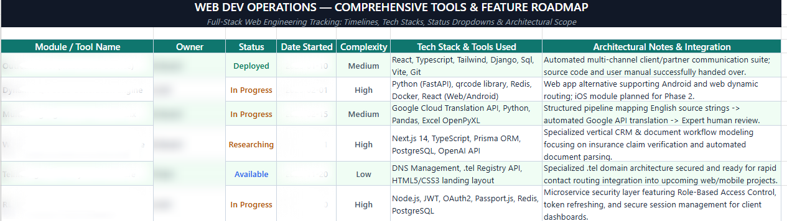
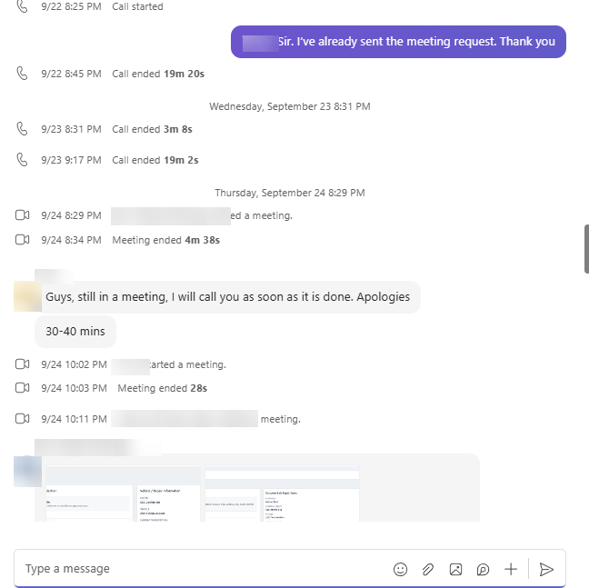
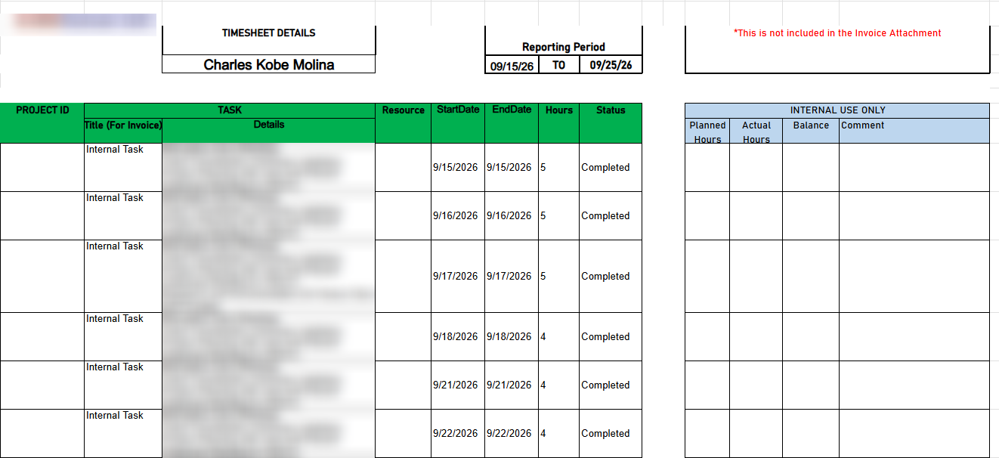
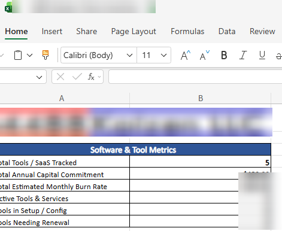
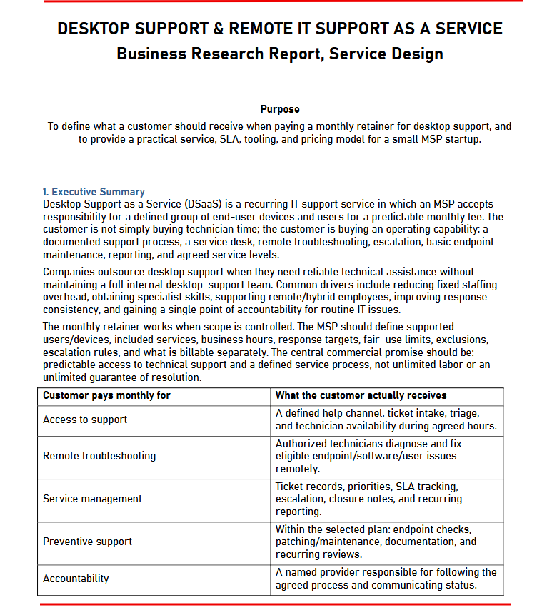
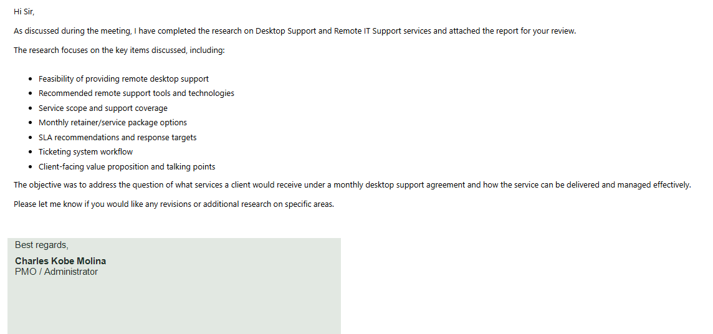

01
PMO / Administrative Specialist
Confidential Operations Team
- Project coordination
- Administrative support
- Meeting scheduling
- Documentation management
- Reporting & research
- Internal coordination
A dependable partner for the details that keep your business moving—from inboxes and calendars to project tracking and clear documentation.
I help businesses keep the moving parts of their operations under control.
Charles Kobe Molina began his career in the BPO industry where he developed strong communication, customer support and problem-solving skills while supporting customers through chat support and fraud analysis roles.
Building upon that foundation, he transitioned into Administrative and PMO support where he now contributes to business operations through project coordination, documentation management, research, reporting, executive support and workflow organization.
His combination of customer service experience, operational thinking and administrative expertise allows him to help teams stay organized, meet deadlines and improve efficiency.
From customer-facing support to business operations, each role strengthened a different part of the way I work.
Confidential Operations Team
Concentrix
TTEC
Practical support for the work behind the work — the coordination, documentation and follow-through that keep teams moving.
Calendar coordination, email organization, follow-ups, meeting scheduling and administrative support.
Discuss support ↗Task tracking, deadline monitoring, team coordination and project progress reporting.
Discuss support ↗Researching industries, tools, competitors, market information and business requirements.
Discuss support ↗Creating reports, SOPs, process documentation and organized business records.
Discuss support ↗Supporting day-to-day business operations through organization, reporting and workflow management.
Discuss support ↗Handling customer concerns, communication workflows and service coordination.
Discuss support ↗Business-focused deliverables that demonstrate research, organization, communication and operational thinking.

Project TrackingA real project tracker organized for quick status reviews. Module and tool names, owner names, and start dates are blurred for privacy.

Team CommunicationMeeting activity and follow-up in a team conversation, with participant names and private message details obscured.

Time & Task TrackingA structured work log for tracking task completion and reporting hours, with company and internal details obscured.

Inventory & ReportingA concise inventory summary with private company branding and financial figures obscured.

Research + DocumentationA business research report outlining service scope, support workflows, SLA considerations, and a practical service model.

Business CommunicationA concise client-ready email summarizing completed research and highlighting the key deliverables for review.
Scheduling meetings, preparing agendas, organizing discussions and documenting action items.
Managing records, calendars, business processes and day-to-day operational tasks.
Creating organized documents, reports and procedures to support business operations.
Helping teams remain aligned through clear communication and organized coordination.
Maintaining accurate records, spreadsheets and business information.
Working effectively with remote teams and supporting distributed operations.
Tools for communication, coordination, documentation, and creative work.
Consistent follow-through, clear communication and dependable support.
Structured work, visible priorities and clean documentation.
Careful with information, deadlines, records and operational details.
Looks for the next action instead of waiting for every instruction.
If you need someone to bring structure to projects, operations and executive workflows, let's start a conversation.